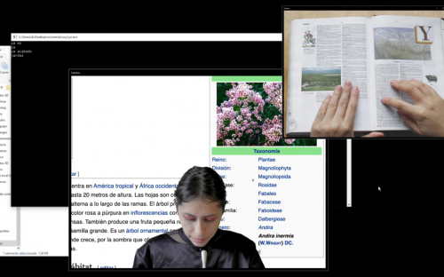
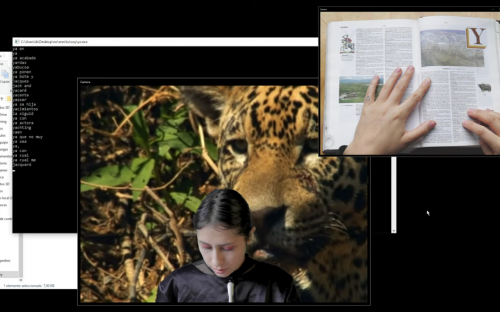

Con un software de reconocimiento de voz, leo palabras de la enciclopedia que empiezan con la letra -Y-. La Máquina entiende poco, y hace sus propias interpretaciones. Sigo avanzando y las Ys repetitivas muestran sus versiones graficas detrás de mi imagen. Puede que la palabra -YO-, sea la unica palabra que el software entiende a la perfección.
La facilidad con la que entiende YO con respecto a las otras palabras, que vuelve a la maquina? un ente egolatra? Un simulador de inteligencia básica de repetición?
Que dice de nuestras relaciones, con el mundo digital y con otros organismos inteligentes? De nuestro lenguaje fallido? De nuestra incapacidad de comunicación?